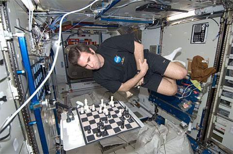
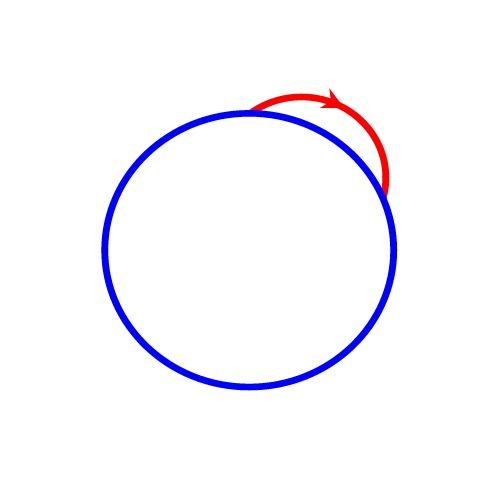
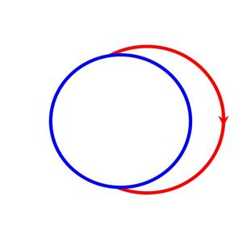
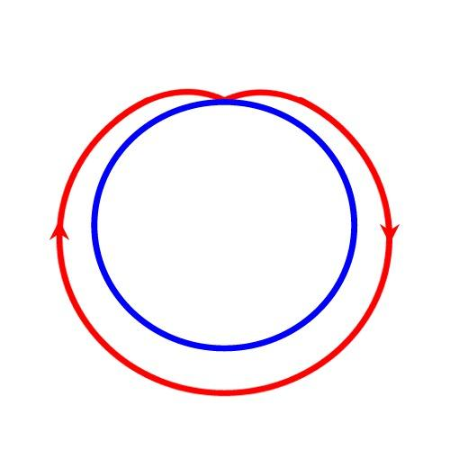
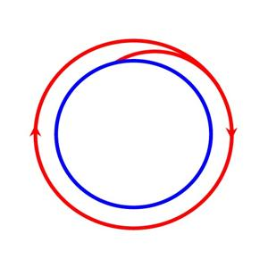
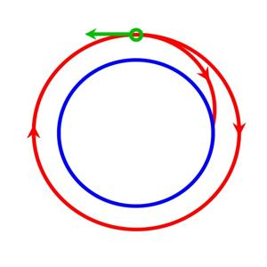
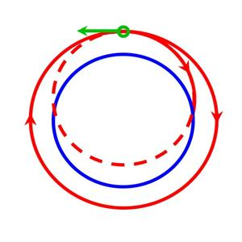
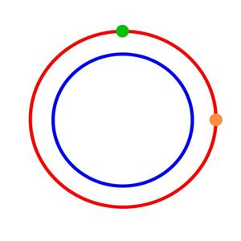
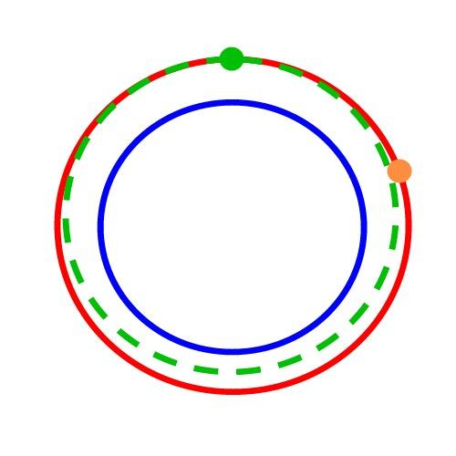
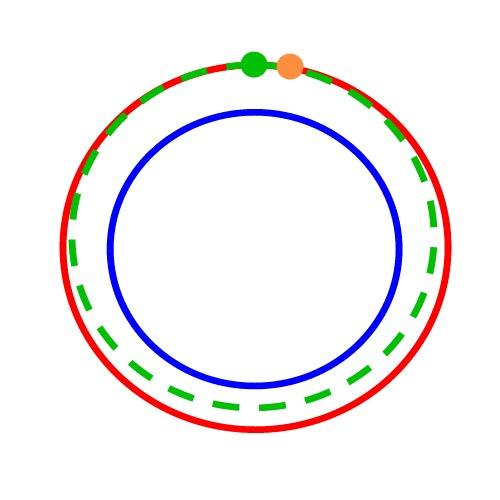

The Hitchhiker’s Guide to the Galaxy states: “There is an art to flying, or rather a knack. Its knack lies in learning to throw yourself at the ground and miss. Clearly, it is this second part, the missing, that presents the difficulties.”

When you see astronauts floating around on the International Space Station, they’re not floating because there isn’t any gravity, they’re floating because they’re falling. In fact, the space station is falling as well, and they’re falling along with it! Think of a malfunctioning elevator with a ball resting on the floor and the elevator suddenly started to fall. Watching from our camera mounted inside we would see a fixed, tiny room with a ball suddenly starting to float! It’s the same exact concept with people in space.
Then why doesn’t it fall out of the sky? The elevator ride would be short-lived for sure, but the ISS has been up there for years. The difference is speed, or more accurately, velocity. Velocity is a vector which consists of two elements and speed is just one element of velocity. The other element is direction. The astronauts are going around the Earth very fast in a horizontal direction relative to the ground. What that means is that they’re falling straight down and also going very fast around the Earth. But still, why don’t they hit the ground? The reason is because the Earth is round! They’re going around the Earth so fast that as they fall, the ground curves underneath them at the same rate.

That’s a little hard to imagine so here’s another way to think about it. Imagine a cannon that is pointed directly up. If that cannon fires a cannonball it’ll go straight up and come straight back down. Now, say you wanted to hit something a couple football fields away. You’d tilt that cannon down and fire the cannonball at an angle so that it’ll go up and over, then start to fall back down where it eventually hits its target. The path it takes looks like an arch, right? Like a curve. And the reason why it comes back down is because of gravity. Well, let’s imagine that you pack that cannon with more gunpowder. Now when you fire it, the ball goes a lot farther. It goes a lot farther but it follows that same arching path. It goes up, curves back down, then lands much farther away.

Now let’s get crazy. Let’s put our cannon at the North Pole and put so much gunpowder in this thing that when we shoot our cannon, the cannonball goes up, curves, then lands all the way down at the south pole! You could imagine drawing its path on a piece of paper; there’s a circle on your paper and a point at the top and the bottom of your circle. Now, draw a line coming out of that point at the top to the right at an angle. Then it sort of curves around, making its own half-circle until you connect it to the point at the bottom. Congratulations! You’ve made your first sub-orbital flight! This is exactly what Alan Shepard did back in the early sixties when he became the first American in space.

What if we take our super-awesome cannon and load it with so much gunpowder that when we fire it, the cannonball goes all the way around the south pole, then starts to fall back down and lands right behind our cannon up at the north pole! You could imagine drawing that on a piece of paper as well. It would look like a circle (Earth) with another slightly larger circle around it (our cannonball’s path) but with the tops of the circles touching.

Alright, final step... we fill the cannon to the brim with gunpowder. We light the fuse. BOOM! The cannonball goes flying off in our traditional arching path. It goes up and around the south pole just like last time. Only this time, it’s going so fast that it doesn’t land at the north pole. It doesn’t land anywhere! It’s going so fast that as it falls, the land underneath it is curving away at the same rate so that the cannonball will never hit. And there we go: orbit. That’s exactly what the astronauts are doing on the International Space Station. They’re falling with style.
Again, they’re not floating because the lack of gravity. The ironic thing is that gravity is what’s keeping them from floating off into space forever!
So, how do you get out of orbit?
Back to Earth
We just talked about why the astronauts appear to float in space even though there’s just as much gravity in space as there is on the ground. (Well technically, the effect of gravity is less the further from the Earth you get, but we’ll save that for another post.) The point is, they’re not floating because there isn’t gravity in space, they’re floating because they’re falling. And they’re not hitting the ground because they have achieved orbital velocity, meaning they’re travelling fast enough parallel to the ground beneath them that the Earth is actually curving away from them at the same rate they’re falling. Remember the cannonball that we shot so fast that it went all the way around the Earth and never came back down?

How do the astronauts ever get back down once they’re up there? If going fast in a certain direction caused them to get into that predicament in the first place, maybe they do the opposite? And that’s exactly what they do. But, there’s two ways to think about it. We can ‘slow down’ in the same direction that we’re travelling, or we can ‘speed up’ in the opposite direction we’re travelling. But really, we’re saying the same thing. (At the top of the circle we’re travelling to the right. The green arrow is indicating that we’re speeding up in the opposite direction we’re travelling – or, slowing down. This makes us fall back to Earth since we’re not going fast enough to stay in orbit.)
Remember that in order for us to get our cannonball into orbit, it required a certain velocity, and velocity means both ‘speed’ and ‘direction.’ If we speed up the cannonball in the opposite direction it’s travelling (that is to say, slow it down), then it will no longer be travelling at the speed required for it to stay in orbit and will eventual fall back down. So what the astronauts do when they leave the space station is they fire their rockets in the opposite direction they’re travelling (‘retro-fire’), enter the Earth’s atmosphere, then open their parachutes and land safely.
A very important point I’d like to make here is that anything travelling at these velocities will follow the same path regardless of their weight. Galileo proved this 400 years ago, and the astronauts of the Apollo 15 mission showed it in action on the Moon by dropping a feather and a hammer at the same time. Both the feather and hammer hit the ground at exactly the same time. That is direct evidence that no matter what an objects mass is (how heavy it is), gravity will effect it the same. We can put a feather into orbit just like we can put a cannonball into the same orbit – they’ll both be going the same speed, the only difference is that one (the feather) will require less effort to get there. That’s why the astronauts appear to float inside the space station; the giant space station and the tiny astronaut inside it both fall at the same speed.
Inside Track
But what if one object was in the same orbit as another object, but was much farther behind it? How would it catch the other object? Answer: slow down.
Slow down?! Slow down to catch something in front of you? What?
Let me explain. First, I’d quickly like to talk about how orbits are just circles (technically, ellipses) and by changing our velocity, we’re simply changing the size of our circle (orbit).
The orbit graphic here shows that in order to get out of orbit and return to Earth, we have to slow down. (At the top of the circle we’re travelling to the right. The green arrow is indicating that we’re speeding up in the opposite direction we’re travelling – or, slowing down. This makes us fall back to Earth since we’re not going fast enough to stay in orbit.)

Remember that an arch is just a small piece of a complete circle. So, if we continue to draw the arch of the path that is returning to Earth, we get a complete circle (see the dotted line?). What this illustrates is that speeding up or slowing down just changes the size of our orbit circle. So how does slowing down help us catch up to something else?
Let’s imagine two objects in the same orbit - one is at the top of the orbit (green) and the other is on the right side (orange). Let’s just say this orbit is 10 units long. If the green guy makes his orbit 9 units long, he’ll end up back at his original point before the orange guy does because the orange guy has farther to go. Think of it as having the inside track in a race; the inside track is smaller than the outside track so you don’t have to go as far to win. After a few complete orbits, he’ll have caught up with the orange guy!



It sounds counter-intuitive, but slowing down in orbit actually makes you go faster! Just remember that whenever you see those space scifi movies where spaceships are zooming around like jet fighters on Earth... things don’t really move like that in reality. When you’re in space, you’re in some type of orbit around something. Always. Gravity doesn’t go away, but it does get less intense the farther you are away from an object. Oh, and everything has gravity - even you and me.
Want to learn more AND have fun doing it? Play Kerbal Space Program. Seriously, do it now! It’ll teach you everything I just said, but much better and you’ll have a lot more fun doing it.